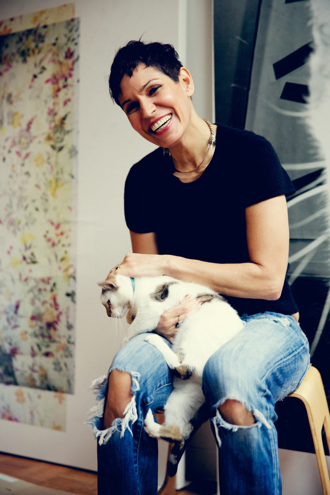

Tamar Siegfried Rosa Halpern
-

© t s r h
My work asks to be experienced as cinematic and dynamic, as well as an expression of ideology, time, and truth. Loneliness is intrinsic to creativity, an exploration of interior spaces, a revelation of intimacy. I view interiority as a space of time travel, a layering of time, in between fragmented thoughts. My recent paintings and plexi work came about while sheltered in place, during a time of uncertainty, loneliness in the world. I turned inward searching deeper within myself for truth, and outwardly to be supportive and take action. In experiencing my work as a transitory space, a series of compositions dissolving into each other rather than a static picture, viewers will confront and unravel the construct of time. To take a picture is to draw attention to something, to expose it. To re-engage with that image is to add another layer, further interpreting that which is exposed. The final layer is transformation, the synthesis of the moment through the artist's eye, exposing not only my interior truth, but the truth of the moment. By combining hand made and technological processes, I save every mark - allowing the viewer to witness the history of creative performance, the push and pull of my hand. Evidence of time past, present, future, otherwise intangible, are layers within. The space left open allows the viewer to experience the unexpected occurring when disparate concepts are seen together, illuminating the experience of existence. Just as film requires projection to come alive, luminescence brings my work to life.
{kind=link}